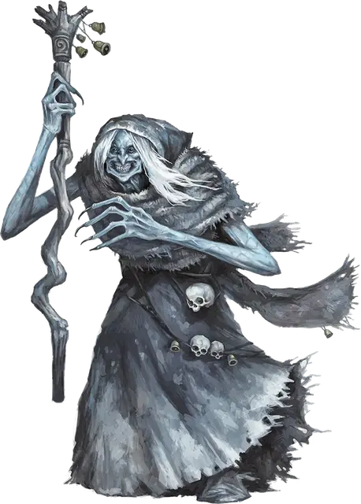

Карга бьёр
Bheur Hag
Средняя Фея, обычно хаотично-злая

Класс Доспеха 17 (природный доспех)
Хиты 91 (14к8 + 28)
Скорость 30 футов, летая 50 футов (парит, магия Серого посоха)
| мод | спас | ||
|---|---|---|---|
| СИЛ | 13 | +1 | +1 |
| ЛОВ | 16 | +3 | +3 |
| ТЕЛ | 14 | +2 | +2 |
| мод | спас | ||
|---|---|---|---|
| ИНТ | 12 | +1 | +1 |
| МДР | 13 | +1 | +4 |
| ХАР | 16 | +3 | +3 |
Навыки Восприятие +4, Выживание +4, Природа +4, Скрытность +6
Иммунитет к урону холод
Чувства тёмное зрение 60 футов, пассивное Восприятие 14
Языки Общий, Ауран, Великаний
Опасность 7 (2900 опыта)
Бонус мастерства +3
Среда обитания Арктика
Особенности
Магия Серого посоха. У карги есть магический серый посох. Она может использовать свою скорость полёта, лишь находясь верхом на посохе. Если посох утерян или уничтожен, то карга должна сделать другой, что занимает один год и один день. Только карга бьёр может использовать серый посох.
Хождение по льду. Карга может передвигаться и карабкаться по любым ледяным поверхностям без каких–либо проверок способностей. Кроме того, труднопроходимая местность из льда или снега не стоит ей дополнительных очков передвижения.
Власть над погодой. Карга накладывает заклинание власть над погодой [control weather], без использования материальных компонентов и используя Харизму в качестве базовой характеристики.
Шабаш карг. Когда нужно работать сообща, несмотря на эгоизм, карги собираются в шабаши. В шабаш могут входить разные ведьмы, в нем они считаются равными. Тем не менее, каждая жаждет личной власти.
Шабаш — это три карги, и конфликт между двумя всегда может решить третья. Если встречается больше трех карг, например, когда возникает конфликт между несколькими шабашами, все погружается в хаос.
Карга бьёр, являющаяся частью шабаша имеет показатель опасности 9 (5,000 опыта)..
Совместное колдовство. Если все три представительницы шабаша находятся в пределах 30 футов друг от друга, каждая может накладывать следующие заклинания из списка волшебника, но ячейки заклинаний у них общие на всех.
• 1 уровень (4 ячейки): луч болезни [ray of sickness], опознание [identify];
• 2 уровень (3 ячейки): поиск предмета [locate object], удержание личности [hold person];
• 3 уровень (3 ячейки): контрзаклинание [counterspell], молния [lightning bolt], проклятие [bestow curse];
• 4 уровень (3 ячейки): воображаемый убийца [phantasmal killer], превращение [polymorph];
• 5 уровень (2 ячейки): наблюдение [scrying], связь с иным миром [contact other plane];
• 6 уровень (1 ячейка): разящее око [eyebite].
При накладывании этих заклинаний каждая карга считается заклинателем 12 уровня, использующим Интеллект в качестве базовой характеристики. Сл спасброска от заклинаний равна 12 + модификатор Интеллекта карги, а бонус атаки заклинанием равен 4 + модификатор Интеллекта.
Глаз карги. Шабаш может создать магический предмет, называемый глазом карги, который делают из настоящего глаза, покрытого лаком, подвешенного на манер кулона. Обычно глаз доверяют помощнику, для сохранения и переноски. Карга в шабаше может действием посмотреть через этот глаз, если он находится на одном с ней плане. У глаза карги КД 10, 1 хит и тёмное зрение в радиусе 60 футов. Если его разрушить, все члены шабаша получают 3к10 урона психической энергией и становятся ослепленными на 24 часа.
У шабаша может быть только один глаз одновременно, и создание нового требует проведения ритуала всеми тремя участницами. Ритуал занимает 1 час, и карги не смогут совершить его, будучи слепыми. Если во время совершения ритуала какая-нибудь карга совершает любое лишнее действие, шабаш должен начинать ритуал заново.
Действия
Мультиатака. Карга совершает две атаки Ударом или Ледяным осколком.
Удар. . Рукопашная атака оружием: +4 к попаданию, досягаемость 5 футов, одна цель. Попадание: 10 (2к8 + 1) дробящего урона плюс 18 (4к8) урона холодом.
Ледяной осколок. Дальнобойная атака заклинанием: +6 к попаданию, дистанция 60 футов, одна цель. Попадание: 30 (6к8 + 3) урона холодом и скорость цели уменьшается на 10 футов, до начала следующего хода карги.
Безумное пиршество. . Карга пирует трупом одного из врагов в 5 футах от нее, который умер в течение последней минуты. Каждое существо по выбору карги, которое находится не далее 60 футов от неё и может её видеть, должно преуспеть в спасброске Мудрости Сл 15 или испугаться её на 1 минуту. Будучи испуганным таким образом существо недееспособно, не может понять что говорят другие, не может читать и может лишь мямлить. Мастер контролирует движение существа, которое становится беспорядочным. Существо может повторять спасбросок в конце каждого своего хода и закончить эффект при успехе. Если спасбросок существа успешен или эффект окончен, то оно получает иммунитет от Безумного Пиршества карги на следующие 24 часа.
Использование заклинаний. Держа в руках серый посох, карга накладывает одно из следующих заклинаний, без затрат материальных компонентов используя Харизму в качестве базовой характеристики (Сл спасброска от заклинаний 14):
• Неограниченно: удержание личности [hold person];
• 1/день каждое: конус холода [cone of cold], град [ice storm], ледяная стена [wall of ice].
Описание
Карги бьёр живут в холодных землях и предпочитают покрытые снегом горы. Они становятся более активными зимой, используют свою магию льда и погоды, чтобы сделать жизнь в близлежащих поселениях ещё более невыносимой.
У карги бьёр сине–белая кожа, как у того кто замерз насмерть. У неё бледно белые волосы и она истощенная, как будто бы пережила зиму, питаясь корой и кожей. Глаза у неё бледные и окружены темной, цвета синяка, плотью. Бьёр ходит с искривленным серым деревянным посохом, на котором она может летать как на метле. Еще он увеличивает её магическую силу.
Карг бьёр привлекают эгоистические действия из холодного расчёта, такие как убийство путешественника ради зимнего плаща, вырубка рощи дриад ради дерева для костра и так далее. Такие дела особенно сладки для бьёр если они неоправданны, например, жадный торговец, который скопил на зиму больше еды, чем может съесть, пока остальные голодают. Бьёр обожают сеять такие идеи и мысли в головы смертных. С помощью способности манипулирования погодой они душат деревни снегом и сильным морозом в надежде поселить отчаяние в жителях и обратить их друг против друга.
В бою карга бьёр также стремится внушать ужас. Находясь с недавно убитым врагом, ведьма может отказаться от атаки, чтобы полакомиться трупом. Одного вида этой дикости достаточно, чтобы временно свести наблюдателя с ума.
См. дополнительно статью: "Бестиарий: Карги"